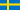
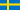

Sala Silvergruva
Sala Silver Mine
Useful Information
| Location: | Sala. From Stockhom E18 to Enköping, then turn right RV70 to Sala, in Sala turn left towards Västeras. Signposted. |
| Open: |
daily 11-16, last tour 15.
60-metre tour: Adults SEK 100, Children SEK 50. Ulrica Mine 155m: Adults SEK 200, Children SEK 100. Three shaft tour: after appointment. Tour above ground: after appointment. Big tour: after appointment. Children’s Mine Adventure: Adults SEK 50, Children SEK 75. Mine Museum: daily . [2007] |
| Fee: |
60-metre tour: Adults SEK 100, Children SEK 50. Ulrica Mine 155m: Adults SEK 200, Children SEK 100. Three shaft tour: Adults SEK 300, Children SEK 150. Tour above ground: Adults SEK 80, Children SEK 40. Big tour: Adults SEK 400, Children SEK 200. Children’s Mine Adventure: Adults SEK 50, Children SEK 75. Mine Museum: free. [2007] |
| Classification: |
 Silver Mine
Antimony Mine Silver Mine
Antimony Mine
|
| Light: |
 Incandescent Incandescent
|
| Dimension: | T=5 °C. |
| Guided tours: |
60-metre tour: VR=60 m, D=60 min. Ulrica Mine 155m: D=90 min. Three shaft tour: D=120 min. Tour above ground: D=45 min. Big tour: D=3 h. Children’s Mine Adventure: D=30 min. [2007] |
| Photography: | |
| Accessibility: | |
| Bibliography: | |
| Address: |
Sala Silvergruva AB, Dr. Christinas Väg, 73336 Sala, Tel: +46-224-677250, Fax: +46-224-19548.
E-mail: |
| As far as we know this information was accurate when it was published (see years in brackets), but may have changed since then. Please check rates and details directly with the companies in question if you need more recent info. |
|
History
Description
While reviewing the mines of Sweden, we found that Sala Silvergruva (Sala Silver Mine) is the best developed and entertaining show mine in the country. There are half a dozen different tours. The regular tour takes an hour and goes down to the 60 m level, but there are several longer tours.
The Three Mine Shafts Tour shows the most northerly and deepest shaft of the mine, Karl XI Shaft, which is 318 m deep. The Ulrica Mine 155m tour shows the Ulrica Eleonora Level 155 m below the surface. This level was created between 1690 and 1790, but when the pumps were shut down the ground water rose to this level. The result is a unique green lake named Christina Lake. Underwater still some wooden ladders from the 18th century can be seen. The Festivity Hall seats 60 people and is used for conferences or three-course dinners, parties or weddings. It is furnished with rustic pine furniture and decorated with lambskins and candle light. It is even possible to stay underground for the night, the mine also has an underground hotel, actually a single room at a depth of 155 meters. The hotel room has a queen bed and breakfast is served underground too.
The underground mine tours are completed above ground by a small mining museum dedicated to the history of the silver mine, and a Police Museum. Around the mine, on the wooded mine grounds, about 40 historic buildings exist. Some were renovated and are now used by shops and craftsmen.
During the operation of the silver mines at Sala, some 40,000 tons of rock were excavated manually. The mine produced about 3 t of silver per year.
 Search DuckDuckGo for "Sala Silvergruva"
Search DuckDuckGo for "Sala Silvergruva" Google Earth Placemark
Google Earth Placemark Sala Silvergruva - Sala Silvergruva, official website. (
Sala Silvergruva - Sala Silvergruva, official website. ( 
 )
) Index
Index Topics
Topics Hierarchical
Hierarchical Countries
Countries Maps
Maps